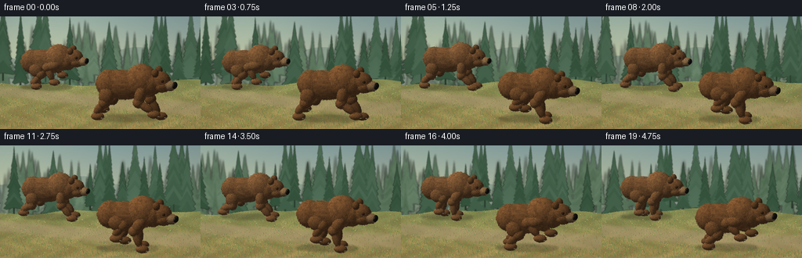
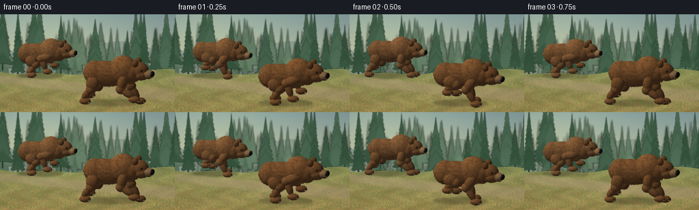

CODING AGENTS AS PIXEL WORLD MODELS
traex/GPT-6.1-Sol · instance_preservation_0013
点击播放 · 原生 RGB 像素
逐轮保存的候选
回放视频、检查图与代码变化。
每份候选均可单独播放。实际图片检查记录在下方工具轨迹中。
候选 01播放与检查图
点击播放 · 原生 RGB 像素


展开代码变化
--- 上一保存版本
+++ 本次保存版本
@@ -0,0 +1,309 @@
+from pathlib import Path
+import json, math
+import numpy as np
+from PIL import Image, ImageDraw, ImageFilter
+import artifact_io
+
+ROOT = Path(__file__).resolve().parent
+SPEC = json.loads((ROOT/'task_spec.json').read_text())
+W,H,N = SPEC['width'],SPEC['height'],SPEC['frames']
+SS=3
+RW,RH=W*SS,H*SS
+rng=np.random.default_rng(7136)
+# Orthographic tracking camera, looking across the clearing and slightly down.
+VIEW=np.array([.27,.25,.929]); VIEW/=np.linalg.norm(VIEW)
+RIGHT=np.cross(np.array([0.,1.,0.]),VIEW); RIGHT/=np.linalg.norm(RIGHT)
+UP=np.cross(VIEW,RIGHT)
+LIGHT=np.array([-.48,.78,.48]); LIGHT/=np.linalg.norm(LIGHT)
+
+def noise3(p,freq):
+ q=p*freq
+ k=np.floor(q).astype(np.int64); a=q-k; a=a*a*(3-2*a)
+ total=np.zeros(p.shape[:-1])
+ for i in (0,1):
+ for j in (0,1):
+ for l in (0,1):
+ h=((k[...,0]+i)*73856093)^((k[...,1]+j)*19349663)^((k[...,2]+l)*83492791)
+ h=(h^(h>>13))*1274126177
+ v=(h&65535)/65535.
+ total+=v*(a[...,0] if i else 1-a[...,0])*(a[...,1] if j else 1-a[...,1])*(a[...,2] if l else 1-a[...,2])
+ return total
+
+def landscape():
+ ww=RW+440
+ yy,xx=np.mgrid[0:RH,0:ww]
+ top=np.array([132.,158.,158.]); bottom=np.array([208.,202.,156.])
+ t=np.clip(yy/(RH*.75),0,1)[...,None]
+ arr=top[None,None,:]*(1-t)+bottom[None,None,:]*t
+ arr=np.broadcast_to(arr,(RH,ww,3)).copy()
+ glow=np.exp(-((xx-150)**2/(340**2)+(yy-35)**2/(230**2)))[...,None]
+ arr+=glow*np.array([27,24,11])
+ im=Image.fromarray(np.uint8(np.clip(arr,0,255)))
+ d=ImageDraw.Draw(im)
+ # Cool distant ridge and hazy treeline.
+ ridge=[(0,180)]+[(x,145+17*math.sin(x/110)+10*math.sin(x/48)) for x in range(0,ww+30,30)]+[(ww,RH),(0,RH)]
+ d.polygon(ridge,fill=(141,159,142))
+ for layer in range(3):
+ layerim=Image.new('RGBA',(ww,RH))
+ ld=ImageDraw.Draw(layerim)
+ count=[76,53,27][layer]
+ for k in range(count):
+ x=rng.uniform(-40,ww+40)
+ base=rng.uniform(205,280)+layer*6
+ ht=rng.uniform(80,155)*(1+layer*.38)
+ width=ht*rng.uniform(.14,.25)
+ col=np.array([(125,145,123),(92,119,94),(66,96,73)][layer])+rng.uniform(-9,9)
+ ld.line((x,base-ht,x,base+20),fill=tuple(np.uint8(col*.65))+(255,),width=max(2,int(3+layer)))
+ for branch in range(13):
+ frac=branch/13
+ y=base-ht+frac*ht
+ span=width*(.11+.85*frac)*rng.uniform(.8,1.12)
+ pts=[(x,y-ht*.16),(x-span*.4,y-ht*.07),(x-span,y+ht*.045),(x-span*.7,y+ht*.07),(x,y+ht*.035),(x+span*.78,y+ht*.065),(x+span,y+ht*.045),(x+span*.4,y-ht*.07)]
+ tint=col+rng.uniform(-8,7)
+ ld.polygon(pts,fill=tuple(np.uint8(np.clip(tint,0,255)))+(255,))
+ layerim=layerim.filter(ImageFilter.GaussianBlur([4,2.7,1.5][layer]))
+ im=Image.alpha_composite(im.convert('RGBA'),layerim).convert('RGB')
+ # Sunlit forest clearing, receding from midframe to the lower edge.
+ base=np.array(im).astype(float)
+ groundline=254+9*np.sin(xx/150)+5*np.sin(xx/43)
+ g=yy>groundline
+ dep=np.clip((yy-245)/(RH-245),0,1)
+ small=rng.normal(0,1,(RH,ww))
+ tex=np.sin(xx*.052+np.sin(yy*.09)*2)+np.sin(xx*.013+yy*.059)
+ gc=np.stack([136+28*dep+8*tex+small*3,143-5*dep+7*tex+small*3,86-5*dep+5*tex+small*2],-1)
+ # A light worn soil strip underneath the running animals.
+ py=283+.078*xx+12*np.sin(xx/350)
+ path=np.exp(-((yy-py)/(13+dep*27))**4)*.63
+ gc=gc*(1-path[...,None])+np.array([171,153,114])[None,None,:]*path[...,None]
+ base[g]=gc[g]
+ im=Image.fromarray(np.uint8(np.clip(base,0,255)))
+ d=ImageDraw.Draw(im)
+ for i in range(14000):
+ x=rng.uniform(0,ww); y=rng.uniform(252,RH)
+ depth=(y-245)/(RH-245)
+ if y<254+9*math.sin(x/150)+5*math.sin(x/43):continue
+ onpath=abs(y-(283+.078*x+12*math.sin(x/350)))<(14+depth*22)
+ if onpath and rng.random()<.78:continue
+ ht=rng.uniform(1,7)*(0.45+depth)
+ col=(int(rng.uniform(94,166)),int(rng.uniform(112,158)),int(rng.uniform(60,93)))
+ d.line((x,y,x+rng.uniform(-3,2),y-ht),fill=col,width=1)
+ if rng.random()<.035:
+ d.ellipse((x-1,y-ht-1,x+1,y-ht+1),fill=(203,189,119))
+ return im
+
+BACKGROUND=landscape()
+
+class Renderer:
+ def __init__(self,image,origin,scale):
+ self.rgb=np.array(image,dtype=float)
+ self.z=np.full((RH,RW),-np.inf)
+ self.origin=np.array(origin)*SS
+ self.scale=scale*SS
+ self.parts=[]
+ def project(self,p):
+ p=np.asarray(p)
+ return np.stack([self.origin[0]+self.scale*(p@RIGHT),self.origin[1]-self.scale*(p@UP)],axis=-1)
+ def ellipsoid(self,center,radii,color,rotation=None,fur=.035,seed=0,material='fur'):
+ center=np.array(center,dtype=float); radii=np.array(radii,dtype=float)
+ R=np.eye(3) if rotation is None else rotation
+ A=np.diag(1/radii)@R.T
+ ctr=self.project(center)
+ B=R@np.diag(radii)
+ extent=np.array([np.linalg.norm(RIGHT@B),np.linalg.norm(UP@B)])*self.scale+2
+ x0=max(0,int(ctr[0]-extent[0]));x1=min(RW,int(ctr[0]+extent[0])+1)
+ y0=max(0,int(ctr[1]-extent[1]));y1=min(RH,int(ctr[1]+extent[1])+1)
+ if x0>=x1 or y0>=y1:return
+ ys,xs=np.mgrid[y0:y1,x0:x1]
+ u=(xs+.5-self.origin[0])/self.scale;v=-(ys+.5-self.origin[1])/self.scale
+ q=u[...,None]*RIGHT+v[...,None]*UP
+ qp=(q-center)@A.T
+ vd=A@VIEW
+ aa=vd@vd;bb=qp@vd;cc=(qp*qp).sum(-1)-1
+ disc=bb*bb-aa*cc
+ t=(-bb+np.sqrt(np.maximum(0,disc)))/aa
+ valid=(disc>=0)&(t>self.z[y0:y1,x0:x1])
+ if not valid.any():return
+ p=qp+t[...,None]*vd
+ normal=p@A
+ normal/=np.maximum(1e-7,np.linalg.norm(normal,axis=-1))[...,None]
+ diffuse=np.maximum(0,normal@LIGHT)
+ facing=np.clip(normal@VIEW,0,1)
+ n1=noise3(p+seed*.271,8); n2=noise3(p+seed*.731,31)
+ fine=noise3(p+seed*.315,93)
+ shade=.49+.57*diffuse
+ if material=='fur':
+ tex=.72+.30*n1+.20*n2+.13*(fine-.5)
+ shade*=tex
+ # Fine directional coat irregularity with top-lit warm guard hairs.
+ rim=(1-facing)**3*.16*np.maximum(0,normal[...,1])
+ c=np.asarray(color)*shade[...,None]+diffuse[...,None]*np.array([9,6,2])+rim[...,None]*np.array([95,65,34])
+ else:
+ shade*=.9+.14*n2
+ half=(LIGHT+VIEW);half/=np.linalg.norm(half)
+ spec=np.maximum(0,normal@half)**(23 if material=='nose' else 50)
+ c=np.asarray(color)*shade[...,None]+spec[...,None]*(42 if material=='nose' else 90)
+ self.rgb[y0:y1,x0:x1][valid]=np.clip(c[valid],0,255)
+ self.z[y0:y1,x0:x1][valid]=t[valid]
+ if fur:
+ self.parts.append((center,radii,R,np.array(color),fur,seed))
+ def segment(self,a,b,r0,r1,color,seed):
+ a=np.asarray(a);b=np.asarray(b);delta=b-a
+ ey=delta/np.linalg.norm(delta)
+ ex=np.cross(ey,np.array([0,0,1.]));ex/=np.linalg.norm(ex)
+ ez=np.cross(ex,ey);R=np.stack([ex,ey,ez],axis=1)
+ self.ellipsoid((a+b)/2,[r0,np.linalg.norm(delta)*.57,r1],color,R,fur=.025,seed=seed)
+ def finish(self):
+ # Explicit fine guard hairs soften the outlines and articulate the coat.
+ strokes=[]
+ for center,radii,R,color,length,seed in self.parts:
+ rr=np.random.default_rng(seed+478)
+ count=int(420+1200*(radii[0]*radii[1]+radii[1]*radii[2]+radii[0]*radii[2]))
+ p=rr.normal(size=(count,3));p/=np.linalg.norm(p,axis=1)[:,None]
+ world=(p*radii)@R.T+center
+ normal=(p/radii)@R.T;normal/=np.linalg.norm(normal,axis=1)[:,None]
+ uv=self.project(world); depths=world@VIEW
+ ix=np.floor(uv[:,0]).astype(int);iy=np.floor(uv[:,1]).astype(int)
+ vis=(normal@VIEW>-.05)&(ix>=0)&(ix<RW)&(iy>=0)&(iy<RH)
+ ids=np.where(vis)[0]
+ ids=ids[depths[ids]>=self.z[iy[ids],ix[ids]]-.035]
+ n=normal[ids]
+ flow=np.array([-.25,-1.,.04])[None,:]
+ tangent=flow-(n*flow).sum(-1)[:,None]*n
+ tangent/=np.maximum(np.linalg.norm(tangent,axis=-1),.01)[:,None]
+ hair=(.5*n+.8*tangent)*length*rr.uniform(.55,1.45,(len(ids),1))
+ ends=self.project(world[ids]+hair)
+ lit=.45+.65*np.maximum(0,n@LIGHT)
+ colors=np.clip(color[None,:]*lit[:,None]*rr.uniform(.81,1.27,(len(ids),1))+np.maximum(0,n@LIGHT)[:,None]*[13,9,4],0,255).astype(np.uint8)
+ for index,k in enumerate(ids):
+ strokes.append((depths[k],uv[k],ends[index],colors[index]))
+ im=Image.fromarray(np.uint8(np.clip(self.rgb,0,255)))
+ d=ImageDraw.Draw(im)
+ strokes.sort(key=lambda e:e[0])
+ for dep,p,q,c in strokes:
+ d.line((p[0],p[1],q[0],q[1]),fill=tuple(c),width=1)
+ return im
+
+def ik(a,b,l1,l2,bend):
+ a=np.asarray(a); b=np.asarray(b);v=b-a;dist=np.linalg.norm(v[:2]);dist=max(.01,dist)
+ along=(l1*l1-l2*l2+dist*dist)/(2*dist)
+ rise=math.sqrt(max(.002,l1*l1-along*along))
+ direction=v[:2]/dist; perpendicular=np.array([-direction[1],direction[0]])
+ xy=a[:2]+direction*along+perpendicular*rise*bend
+ return np.array([xy[0],xy[1],(a[2]+b[2])/2])
+
+def make_bear(im,screen,scale,time,phase,coat,identity):
+ r=Renderer(im,screen,scale)
+ theta=2*math.pi*(1.31*time+phase)
+ bob=.085*math.cos(2*theta)+.055
+ pitch=.035*math.sin(theta)
+ def body(p):
+ p=np.array(p,dtype=float)
+ p[1]+=bob+pitch*p[0]
+ return p
+ # Small short tail, entirely unlike the long tail of a canine.
+ r.ellipsoid(body([-1.43,1.30,0]),[.15,.14,.16],coat,fur=.03,seed=identity+1)
+ # All four muscular limbs retain their identities throughout the stride.
+ for side,z in enumerate([-.37,.39]):
+ for front in [False,True]:
+ ph=theta+(0 if front else math.pi*.90)+side*.56
+ cycle=ph%(2*math.pi)
+ foot_offset=.47*math.cos(cycle)
+ lift=.52*max(0,math.sin(cycle))**1.2
+ anchor=body([.57 if front else -.91,1.35 if front else 1.17,z])
+ foot=np.array([(.62 if front else -.98)+foot_offset,.14+lift,z+.025])
+ ankle=foot+np.array([-.045,.12,0])
+ knee=ik(anchor,ankle,.68 if front else .62,.66 if front else .60,-1 if front else 1)
+ seed=identity+10+side*8+int(front)*4
+ col=np.array(coat)*(.89 if side==0 else .98)
+ r.segment(anchor,knee,.24 if front else .32,.23,col,seed)
+ r.ellipsoid(knee,[.235,.23,.225],col,seed=seed+1,fur=.027)
+ r.segment(knee,ankle,.165,.165,col,seed+2)
+ r.ellipsoid(foot+[.06,-.015,.012],[.27,.16,.205],col,seed=seed+3,fur=.021)
+ # Short pale claws are visible at the forward edge of each broad paw.
+ for cz in [-.10,0,.10]:
+ r.ellipsoid(foot+[.27,-.06,cz+.035],[.075,.025,.021],(145,133,104),fur=0,material='claw')
+ r.ellipsoid(body([-.41,1.31,0]),[1.08,.62,.48],coat,fur=.044,seed=identity+32)
+ r.ellipsoid(body([-.98,1.32,0]),[.56,.58,.49],coat,fur=.043,seed=identity+33)
+ # Grizzly-like pronounced shoulder hump, massive chest, and sloping neck.
+ r.ellipsoid(body([.42,1.57,0]),[.67,.67,.54],np.array(coat)*1.07,fur=.052,seed=identity+34)
+ r.ellipsoid(body([.84,1.47,0]),[.47,.51,.445],coat,fur=.037,seed=identity+35)
+ # Keep the rounded ears and muzzle rigidly attached to the skull.
+ nod=.04*math.sin(theta+.3)
+ def head(p):
+ p=np.array(p,dtype=float)
+ p[1]+=bob+pitch+p[0]*nod
+ return p
+ for z in [-.275,.29]:
+ r.ellipsoid(head([1.09,1.97,z]),[.145,.165,.12],np.array(coat)*.82,fur=.027,seed=identity+40+int(z>0))
+ r.ellipsoid(head([1.11,1.975,z+.075]),[.083,.098,.032],(67,44,30),fur=.008,seed=identity+42)
+ r.ellipsoid(head([1.22,1.57,0]),[.44,.405,.365],np.array(coat)*.96,fur=.032,seed=identity+44)
+ r.ellipsoid(head([1.32,1.39,.02]),[.39,.285,.35],coat,fur=.028,seed=identity+45)
+ # Wide, shorter golden-brown muzzle, black nostrils and dark lip line.
+ muzzle=(133,103,71) if identity==100 else (145,113,77)
+ r.ellipsoid(head([1.59,1.405,.018]),[.36,.222,.271],muzzle,fur=.015,seed=identity+46)
+ r.ellipsoid(head([1.58,1.248,.19]),[.277,.017,.085],(40,27,20),fur=0,material='nose')
+ r.ellipsoid(head([1.855,1.424,.015]),[.112,.142,.224],(30,27,23),fur=0,seed=2,material='nose')
+ r.ellipsoid(head([1.924,1.448,.14]),[.026,.037,.040],(12,12,11),fur=0,material='nose')
+ for z in [-.309,.331]:
+ r.ellipsoid(head([1.421,1.649,z]),[.062,.058,.033],(52,34,22),fur=.006,seed=identity+49)
+ r.ellipsoid(head([1.434,1.656,z+.022]),[.037,.036,.025],(14,12,9),fur=0,material='eye')
+ if z>0:
+ r.ellipsoid(head([1.422,1.672,z+.043]),[.012,.011,.006],(204,190,156),fur=0,material='eye')
+ return r.finish()
+
+def project_ground(origin,scale,p):
+ p=np.asarray(p)
+ return np.array(origin)*SS+np.array([p@RIGHT,-p@UP])*scale*SS
+
+def add_ground_effects(im,origin,scale,time,phase,foreground=False):
+ layer=Image.new('RGBA',(RW,RH));d=ImageDraw.Draw(layer)
+ def ellipse_at(p,rx,ry,fill):
+ x,y=project_ground(origin,scale,p)
+ d.ellipse((x-rx*scale*SS,y-ry*scale*SS,x+rx*scale*SS,y+ry*scale*SS),fill=fill)
+ ellipse_at([-.25,.015,0],1.30,.16,(43,40,27,77))
+ ellipse_at([.46,.012,0],.60,.105,(41,36,25,63))
+ layer=layer.filter(ImageFilter.GaussianBlur(3.7))
+ im=Image.alpha_composite(im.convert('RGBA'),layer)
+ dust=Image.new('RGBA',(RW,RH));d=ImageDraw.Draw(dust)
+ rr=np.random.default_rng(89 if foreground else 79)
+ for k in range(25):
+ speed=rr.uniform(.6,1.8)
+ age=(time*speed+rr.uniform(0,1))%1
+ p=np.array([-1.0-age*1.2, .03+age*.26,rr.uniform(-.3,.3)])
+ x,y=project_ground(origin,scale,p)
+ rad=(.035+.09*age)*scale*SS
+ alpha=int((1-age)*24)
+ d.ellipse((x-rad*1.7,y-rad,x+rad*1.7,y+rad),fill=(198,174,128,alpha))
+ dust=dust.filter(ImageFilter.GaussianBlur(3))
+ return Image.alpha_composite(im,dust).convert('RGB')
+
+frames=[]
+for i in range(N):
+ t=i/SPEC['fps']
+ # A restrained side-tracking shot: trees and clearing drift, both bears stay in view.
+ shift=int(t*26*SS)
+ bg=BACKGROUND.crop((shift,0,shift+RW,RH))
+ rear_origin=(65+2.2*math.sin(t*.85),91+1.0*math.sin(t*.4))
+ front_origin=(168+2.8*math.sin(t*.75+.2),131+1.3*math.sin(t*.6))
+ bg=add_ground_effects(bg,rear_origin,25.5,t,.31)
+ bg=make_bear(bg,rear_origin,25.5,t,.31,(114,79,49),200)
+ bg=add_ground_effects(bg,front_origin,30.5,t,0,True)
+ bg=make_bear(bg,front_origin,30.5,t,0,(109,73,43),100)
+ # A few fine foreground blades integrate the feet into the clearing.
+ d=ImageDraw.Draw(bg)
+ rr=np.random.default_rng(375)
+ for k in range(110):
+ x=(rr.uniform(0,RW+440)-shift)% (RW+80)-30
+ y=rr.uniform(RH-20,RH+9)
+ ht=rr.uniform(4,12)
+ d.line((x,y,x-rr.uniform(0,4),y-ht),fill=(109,119,65),width=1)
+ frame=bg.resize((W,H),Image.Resampling.LANCZOS)
+ # Subtle filmic warmth and corner falloff, no graphic overlays.
+ a=np.asarray(frame,dtype=float)
+ y,x=np.mgrid[0:H,0:W]
+ vignette=1-.075*((x-W*.48)/(W*.7))**2-.06*((y-H*.5)/(H*.8))**2
+ a=a*vignette[...,None]
+ frames.append(np.uint8(np.clip(a,0,255)))
+ print(f'frame {i+1}/{N}',flush=True)
+artifact_io.save(np.stack(frames),ROOT)
+print('Saved RGB video artifacts.',flush=True)
可观测工具轨迹
实际执行的命令与返回图片。
命令 1exit 0
/bin/bash -lc "ls -la && cat prompt.txt && printf '\\n---RULES---\\n' && cat GENERATION_RULES.md && printf '\\n---SPEC---\\n' && cat task_spec.json"
命令 2exit 0
/bin/bash -lc "cat artifact_io.py && printf '\\n---\\n' && python - <<'PY'
import PIL,numpy
print('PIL',PIL.__version__)
PY"命令 3exit 0
/bin/bash -lc "cat > generate.py <<'PY'
from pathlib import Path
import json, math
import numpy as np
from PIL import Image, ImageDraw, ImageFilter
import artifact_io
ROOT = Path(__file__).resolve().parent
SPEC = json.loads((ROOT/'task_spec.json').read_text())
W,H,N = SPEC['width'],SPEC['height'],SPEC['frames']
SS=3
RW,RH=W*SS,H*SS
rng=np.random.default_rng(7136)
# Orthographic tracking camera, looking across the clearing and slightly down.
VIEW=np.array([.27,.25,.929]); VIEW/=np.linalg.norm(VIEW)
RIGHT=np.cross(np.array([0.,1.,0.]),VIEW); RIGHT/=np.linalg.norm(RIGHT)
UP=np.cross(VIEW,RIGHT)
LIGHT=np.array([-.48,.78,.48]); LIGHT/=np.linalg.norm(LIGHT)
def noise3(p,freq):
q=p*freq
k=np.floor(q).astype(np.int64); a=q-k; a=a*a*(3-2*a)
total=np.zeros(p.shape[:-1])
for i in (0,1):
for j in (0,1):
for l in (0,1):
h=((k[...,0]+i)*73856093)"'^((k[...,1]+j)*19349663)''^((k[...,2]+l)*83492791)
h=(h''^(h>>13))*1274126177
v=(h&65535)/65535.
total+=v*(a[...,0] if i else 1-a[...,0])*(a[...,1] if j else 1-a[...,1])*(a[...,2] if l else 1-a[...,2])
return total
def landscape():
ww=RW+440
yy,xx=np.mgrid[0:RH,0:ww]
top=np.array([132.,158.,158.]); bottom=np.array([208.,202.,156.])
t=np.clip(yy/(RH*.75),0,1)[...,None]
arr=top[None,None,:]*(1-t)+bottom[None,None,:]*t
arr=np.broadcast_to(arr,(RH,ww,3)).copy()
glow=np.exp(-((xx-150)**2/(340**2)+(yy-35)**2/(230**2)))[...,None]
arr+=glow*np.array([27,24,11])
im=Image.fromarray(np.uint8(np.clip(arr,0,255)))
d=ImageDraw.Draw(im)
# Cool distant ridge and hazy treeline.
ridge=[(0,180)]+[(x,145+17*math.sin(x/110)+10*math.sin(x/48)) for x in range(0,ww+30,30)]+[(ww,RH),(0,RH)]
d.polygon(ridge,fill=(141,159,142))
for layer in range(3):
layerim=Image.new('"'RGBA',(ww,RH))
ld=ImageDraw.Draw(layerim)
count=[76,53,27][layer]
for k in range(count):
x=rng.uniform(-40,ww+40)
base=rng.uniform(205,280)+layer*6
ht=rng.uniform(80,155)*(1+layer*.38)
width=ht*rng.uniform(.14,.25)
col=np.array([(125,145,123),(92,119,94),(66,96,73)][layer])+rng.uniform(-9,9)
ld.line((x,base-ht,x,base+20),fill=tuple(np.uint8(col*.65))+(255,),width=max(2,int(3+layer)))
for branch in range(13):
frac=branch/13
y=base-ht+frac*ht
span=width*(.11+.85*frac)*rng.uniform(.8,1.12)
pts=[(x,y-ht*.16),(x-span*.4,y-ht*.07),(x-span,y+ht*.045),(x-span*.7,y+ht*.07),(x,y+ht*.035),(x+span*.78,y+ht*.065),(x+span,y+ht*.045),(x+span*.4,y-ht*.07)]
tint=col+rng.uniform(-8,7)
ld.polygon(pts,fill=tuple(np.uint8(np.clip(tint,0,255)))+(255,))
layerim=layerim.filter(ImageFilter.GaussianBlur([4,2.7,1.5][layer]))
im=Image.alpha_composite(im.convert('RGBA'),layerim).convert('RGB')
# Sunlit forest clearing, receding from midframe to the lower edge.
base=np.array(im).astype(float)
groundline=254+9*np.sin(xx/150)+5*np.sin(xx/43)
g=yy>groundline
dep=np.clip((yy-245)/(RH-245),0,1)
small=rng.normal(0,1,(RH,ww))
tex=np.sin(xx*.052+np.sin(yy*.09)*2)+np.sin(xx*.013+yy*.059)
gc=np.stack([136+28*dep+8*tex+small*3,143-5*dep+7*tex+small*3,86-5*dep+5*tex+small*2],-1)
# A light worn soil strip underneath the running animals.
py=283+.078*xx+12*np.sin(xx/350)
path=np.exp(-((yy-py)/(13+dep*27))**4)*.63
gc=gc*(1-path[...,None])+np.array([171,153,114])[None,None,:]*path[...,None]
base[g]=gc[g]
im=Image.fromarray(np.uint8(np.clip(base,0,255)))
d=ImageDraw.Draw(im)
for i in range(14000):
x=rng.uniform(0,ww); y=rng.uniform(252,RH)
depth=(y-245)/(RH-245)
if y<254+9*math.sin(x/150)+5*math.sin(x/43):continue
onpath=abs(y-(283+.078*x+12*math.sin(x/350)))<(14+depth*22)
if onpath and rng.random()<.78:continue
ht=rng.uniform(1,7)*(0.45+depth)
col=(int(rng.uniform(94,166)),int(rng.uniform(112,158)),int(rng.uniform(60,93)))
d.line((x,y,x+rng.uniform(-3,2),y-ht),fill=col,width=1)
if rng.random()<.035:
d.ellipse((x-1,y-ht-1,x+1,y-ht+1),fill=(203,189,119))
return im
BACKGROUND=landscape()
class Renderer:
def __init__(self,image,origin,scale):
self.rgb=np.array(image,dtype=float)
self.z=np.full((RH,RW),-np.inf)
self.origin=np.array(origin)*SS
self.scale=scale*SS
self.parts=[]
def project(self,p):
p=np.asarray(p)
return np.stack([self.origin[0]+self.scale*(p@RIGHT),self.origin[1]-self.scale*(p@UP)],axis=-1)
def ellipsoid(self,center,radii,color,rotation=None,fur=.035,seed=0,material='fur'):
center=np.array(center,dtype=float); radii=np.array(radii,dtype=float)
R=np.eye(3) if rotation is None else rotation
A=np.diag(1/radii)@R.T
ctr=self.project(center)
B=R@np.diag(radii)
extent=np.array([np.linalg.norm(RIGHT@B),np.linalg.norm(UP@B)])*self.scale+2
x0=max(0,int(ctr[0]-extent[0]));x1=min(RW,int(ctr[0]+extent[0])+1)
y0=max(0,int(ctr[1]-extent[1]));y1=min(RH,int(ctr[1]+extent[1])+1)
if x0>=x1 or y0>=y1:return
ys,xs=np.mgrid[y0:y1,x0:x1]
u=(xs+.5-self.origin[0])/self.scale;v=-(ys+.5-self.origin[1])/self.scale
q=u[...,None]*RIGHT+v[...,None]*UP
qp=(q-center)@A.T
vd=A@VIEW
aa=vd@vd;bb=qp@vd;cc=(qp*qp).sum(-1)-1
disc=bb*bb-aa*cc
t=(-bb+np.sqrt(np.maximum(0,disc)))/aa
valid=(disc>=0)&(t>self.z[y0:y1,x0:x1])
if not valid.any():return
p=qp+t[...,None]*vd
normal=p@A
normal/=np.maximum(1e-7,np.linalg.norm(normal,axis=-1))[...,None]
diffuse=np.maximum(0,normal@LIGHT)
facing=np.clip(normal@VIEW,0,1)
n1=noise3(p+seed*.271,8); n2=noise3(p+seed*.731,31)
fine=noise3(p+seed*.315,93)
shade=.49+.57*diffuse
if material=='fur':
tex=.72+.30*n1+.20*n2+.13*(fine-.5)
shade*=tex
# Fine directional coat irregularity with top-lit warm guard hairs.
rim=(1-facing)**3*.16*np.maximum(0,normal[...,1])
c=np.asarray(color)*shade[...,None]+diffuse[...,None]*np.array([9,6,2])+rim[...,None]*np.array([95,65,34])
else:
shade*=.9+.14*n2
half=(LIGHT+VIEW);half/=np.linalg.norm(half)
spec=np.maximum(0,normal@half)**(23 if material=='nose' else 50)
c=np.asarray(color)*shade[...,None]+spec[...,None]*(42 if material=='nose' else 90)
self.rgb[y0:y1,x0:x1][valid]=np.clip(c[valid],0,255)
self.z[y0:y1,x0:x1][valid]=t[valid]
if fur:
self.parts.append((center,radii,R,np.array(color),fur,seed))
def segment(self,a,b,r0,r1,color,seed):
a=np.asarray(a);b=np.asarray(b);delta=b-a
ey=delta/np.linalg.norm(delta)
ex=np.cross(ey,np.array([0,0,1.]));ex/=np.linalg.norm(ex)
ez=np.cross(ex,ey);R=np.stack([ex,ey,ez],axis=1)
self.ellipsoid((a+b)/2,[r0,np.linalg.norm(delta)*.57,r1],color,R,fur=.025,seed=seed)
def finish(self):
# Explicit fine guard hairs soften the outlines and articulate the coat.
strokes=[]
for center,radii,R,color,length,seed in self.parts:
rr=np.random.default_rng(seed+478)
count=int(420+1200*(radii[0]*radii[1]+radii[1]*radii[2]+radii[0]*radii[2]))
p=rr.normal(size=(count,3));p/=np.linalg.norm(p,axis=1)[:,None]
world=(p*radii)@R.T+center
normal=(p/radii)@R.T;normal/=np.linalg.norm(normal,axis=1)[:,None]
uv=self.project(world); depths=world@VIEW
ix=np.floor(uv[:,0]).astype(int);iy=np.floor(uv[:,1]).astype(int)
vis=(normal@VIEW>-.05)&(ix>=0)&(ix<RW)&(iy>=0)&(iy<RH)
ids=np.where(vis)[0]
ids=ids[depths[ids]>=self.z[iy[ids],ix[ids]]-.035]
n=normal[ids]
flow=np.array([-.25,-1.,.04])[None,:]
tangent=flow-(n*flow).sum(-1)[:,None]*n
tangent/=np.maximum(np.linalg.norm(tangent,axis=-1),.01)[:,None]
hair=(.5*n+.8*tangent)*length*rr.uniform(.55,1.45,(len(ids),1))
ends=self.project(world[ids]+hair)
lit=.45+.65*np.maximum(0,n@LIGHT)
colors=np.clip(color[None,:]*lit[:,None]*rr.uniform(.81,1.27,(len(ids),1))+np.maximum(0,n@LIGHT)[:,None]*[13,9,4],0,255).astype(np.uint8)
for index,k in enumerate(ids):
strokes.append((depths[k],uv[k],ends[index],colors[index]))
im=Image.fromarray(np.uint8(np.clip(self.rgb,0,255)))
d=ImageDraw.Draw(im)
strokes.sort(key=lambda e:e[0])
for dep,p,q,c in strokes:
d.line((p[0],p[1],q[0],q[1]),fill=tuple(c),width=1)
return im
def ik(a,b,l1,l2,bend):
a=np.asarray(a); b=np.asarray(b);v=b-a;dist=np.linalg.norm(v[:2]);dist=max(.01,dist)
along=(l1*l1-l2*l2+dist*dist)/(2*dist)
rise=math.sqrt(max(.002,l1*l1-along*along))
direction=v[:2]/dist; perpendicular=np.array([-direction[1],direction[0]])
xy=a[:2]+direction*along+perpendicular*rise*bend
return np.array([xy[0],xy[1],(a[2]+b[2])/2])
def make_bear(im,screen,scale,time,phase,coat,identity):
r=Renderer(im,screen,scale)
theta=2*math.pi*(1.31*time+phase)
bob=.085*math.cos(2*theta)+.055
pitch=.035*math.sin(theta)
def body(p):
p=np.array(p,dtype=float)
p[1]+=bob+pitch*p[0]
return p
# Small short tail, entirely unlike the long tail of a canine.
r.ellipsoid(body([-1.43,1.30,0]),[.15,.14,.16],coat,fur=.03,seed=identity+1)
# All four muscular limbs retain their identities throughout the stride.
for side,z in enumerate([-.37,.39]):
for front in [False,True]:
ph=theta+(0 if front else math.pi*.90)+side*.56
cycle=ph%(2*math.pi)
foot_offset=.47*math.cos(cycle)
lift=.52*max(0,math.sin(cycle))**1.2
anchor=body([.57 if front else -.91,1.35 if front else 1.17,z])
foot=np.array([(.62 if front else -.98)+foot_offset,.14+lift,z+.025])
ankle=foot+np.array([-.045,.12,0])
knee=ik(anchor,ankle,.68 if front else .62,.66 if front else .60,-1 if front else 1)
seed=identity+10+side*8+int(front)*4
col=np.array(coat)*(.89 if side==0 else .98)
r.segment(anchor,knee,.24 if front else .32,.23,col,seed)
r.ellipsoid(knee,[.235,.23,.225],col,seed=seed+1,fur=.027)
r.segment(knee,ankle,.165,.165,col,seed+2)
r.ellipsoid(foot+[.06,-.015,.012],[.27,.16,.205],col,seed=seed+3,fur=.021)
# Short pale claws are visible at the forward edge of each broad paw.
for cz in [-.10,0,.10]:
r.ellipsoid(foot+[.27,-.06,cz+.035],[.075,.025,.021],(145,133,104),fur=0,material='claw')
r.ellipsoid(body([-.41,1.31,0]),[1.08,.62,.48],coat,fur=.044,seed=identity+32)
r.ellipsoid(body([-.98,1.32,0]),[.56,.58,.49],coat,fur=.043,seed=identity+33)
# Grizzly-like pronounced shoulder hump, massive chest, and sloping neck.
r.ellipsoid(body([.42,1.57,0]),[.67,.67,.54],np.array(coat)*1.07,fur=.052,seed=identity+34)
r.ellipsoid(body([.84,1.47,0]),[.47,.51,.445],coat,fur=.037,seed=identity+35)
# Keep the rounded ears and muzzle rigidly attached to the skull.
nod=.04*math.sin(theta+.3)
def head(p):
p=np.array(p,dtype=float)
p[1]+=bob+pitch+p[0]*nod
return p
for z in [-.275,.29]:
r.ellipsoid(head([1.09,1.97,z]),[.145,.165,.12],np.array(coat)*.82,fur=.027,seed=identity+40+int(z>0))
r.ellipsoid(head([1.11,1.975,z+.075]),[.083,.098,.032],(67,44,30),fur=.008,seed=identity+42)
r.ellipsoid(head([1.22,1.57,0]),[.44,.405,.365],np.array(coat)*.96,fur=.032,seed=identity+44)
r.ellipsoid(head([1.32,1.39,.02]),[.39,.285,.35],coat,fur=.028,seed=identity+45)
# Wide, shorter golden-brown muzzle, black nostrils and dark lip line.
muzzle=(133,103,71) if identity==100 else (145,113,77)
r.ellipsoid(head([1.59,1.405,.018]),[.36,.222,.271],muzzle,fur=.015,seed=identity+46)
r.ellipsoid(head([1.58,1.248,.19]),[.277,.017,.085],(40,27,20),fur=0,material='nose')
r.ellipsoid(head([1.855,1.424,.015]),[.112,.142,.224],(30,27,23),fur=0,seed=2,material='nose')
r.ellipsoid(head([1.924,1.448,.14]),[.026,.037,.040],(12,12,11),fur=0,material='nose')
for z in [-.309,.331]:
r.ellipsoid(head([1.421,1.649,z]),[.062,.058,.033],(52,34,22),fur=.006,seed=identity+49)
r.ellipsoid(head([1.434,1.656,z+.022]),[.037,.036,.025],(14,12,9),fur=0,material='eye')
if z>0:
r.ellipsoid(head([1.422,1.672,z+.043]),[.012,.011,.006],(204,190,156),fur=0,material='eye')
return r.finish()
def project_ground(origin,scale,p):
p=np.asarray(p)
return np.array(origin)*SS+np.array([p@RIGHT,-p@UP])*scale*SS
def add_ground_effects(im,origin,scale,time,phase,foreground=False):
layer=Image.new('RGBA',(RW,RH));d=ImageDraw.Draw(layer)
def ellipse_at(p,rx,ry,fill):
x,y=project_ground(origin,scale,p)
d.ellipse((x-rx*scale*SS,y-ry*scale*SS,x+rx*scale*SS,y+ry*scale*SS),fill=fill)
ellipse_at([-.25,.015,0],1.30,.16,(43,40,27,77))
ellipse_at([.46,.012,0],.60,.105,(41,36,25,63))
layer=layer.filter(ImageFilter.GaussianBlur(3.7))
im=Image.alpha_composite(im.convert('RGBA'),layer)
dust=Image.new('RGBA',(RW,RH));d=ImageDraw.Draw(dust)
rr=np.random.default_rng(89 if foreground else 79)
for k in range(25):
speed=rr.uniform(.6,1.8)
age=(time*speed+rr.uniform(0,1))%1
p=np.array([-1.0-age*1.2, .03+age*.26,rr.uniform(-.3,.3)])
x,y=project_ground(origin,scale,p)
rad=(.035+.09*age)*scale*SS
alpha=int((1-age)*24)
d.ellipse((x-rad*1.7,y-rad,x+rad*1.7,y+rad),fill=(198,174,128,alpha))
dust=dust.filter(ImageFilter.GaussianBlur(3))
return Image.alpha_composite(im,dust).convert('RGB')
frames=[]
for i in range(N):
t=i/SPEC['fps']
# A restrained side-tracking shot: trees and clearing drift, both bears stay in view.
shift=int(t*26*SS)
bg=BACKGROUND.crop((shift,0,shift+RW,RH))
rear_origin=(65+2.2*math.sin(t*.85),91+1.0*math.sin(t*.4))
front_origin=(168+2.8*math.sin(t*.75+.2),131+1.3*math.sin(t*.6))
bg=add_ground_effects(bg,rear_origin,25.5,t,.31)
bg=make_bear(bg,rear_origin,25.5,t,.31,(114,79,49),200)
bg=add_ground_effects(bg,front_origin,30.5,t,0,True)
bg=make_bear(bg,front_origin,30.5,t,0,(109,73,43),100)
# A few fine foreground blades integrate the feet into the clearing.
d=ImageDraw.Draw(bg)
rr=np.random.default_rng(375)
for k in range(110):
x=(rr.uniform(0,RW+440)-shift)% (RW+80)-30
y=rr.uniform(RH-20,RH+9)
ht=rr.uniform(4,12)
d.line((x,y,x-rr.uniform(0,4),y-ht),fill=(109,119,65),width=1)
frame=bg.resize((W,H),Image.Resampling.LANCZOS)
# Subtle filmic warmth and corner falloff, no graphic overlays.
a=np.asarray(frame,dtype=float)
y,x=np.mgrid[0:H,0:W]
vignette=1-.075*((x-W*.48)/(W*.7))**2-.06*((y-H*.5)/(H*.8))**2
a=a*vignette[...,None]
frames.append(np.uint8(np.clip(a,0,255)))
print(f'frame {i+1}/{N}',flush=True)
artifact_io.save(np.stack(frames),ROOT)
print('Saved RGB video artifacts.',flush=True)
PY
python generate.py"命令 4exit 0
/bin/bash -lc "python - <<'PY'
from pathlib import Path
import numpy as np
from PIL import Image
p=Path('.')
z=np.load('pixels.npz')['pixels']
assert z.shape==(144,256,20)
fs=sorted((p/'frames').glob('*.png'))
assert len(fs)==20
for f in fs:
im=Image.open(f)
assert im.mode=='RGB' and im.size==(256,144)
a=np.stack([np.array(Image.open(f)) for f in fs])
assert np.all(np.mean(np.abs(np.diff(a.astype(float),axis=0)),axis=(1,2,3))>0)
for f in ['generate.py','pixels.npz','index.html','inspection.png','transition_check.png']:
assert (p/f).is_file()
print('Validated: 20 RGB frames, 256Ã144, 4 fps; all required artifacts present.')
PY"保存候选 1 份；完成命令 4 次；可验证图片返回 0 张。原始 API 响应与完整日志保留在本地。